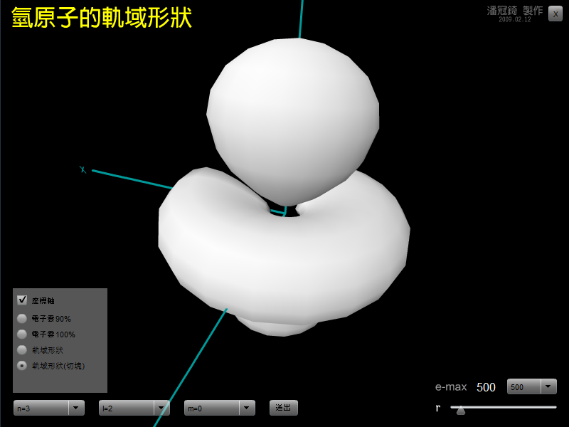

這個動畫展現原子軌域的形狀。
你可以選擇主量子數( n )、角動量量子束( l )以及磁量子數( m )，也可以選擇觀看電子雲，或直接顯示軌域的形狀。
右下角的按鈕可以調整攝影機的遠近，也可以調整電子雲裡要出現多少個電子(的像)。
點、拖曳原子，可以改變不同視角喔！
啞鈴形的 2Pz 軌域，其實就是 n= 2, l= 1, m= 0 這個軌域，而在啞鈴形的區域中可以包含 90% 的電子出現機率。

↑動畫截圖。
檔案下載
[PC exe]